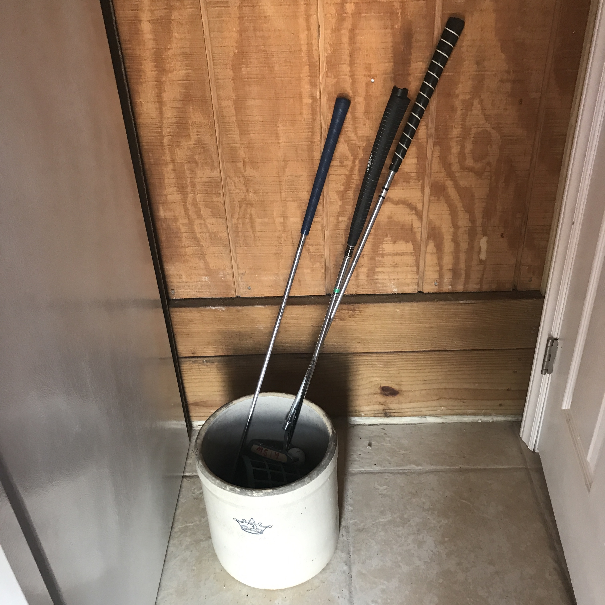

We have some putters and golf balls for your enjoyment while you are here. In the Cabana, next to the refridgerator there is a bucket filled with putters and golf balls for you to borrow. Please return all clubs and balls to the bucket when you are finished with them so that our other guests can enjoy them!
In case you have any trouble opening the doors to our Cabana, here are videos on how to open and close the doors.
If it's 5 o'clock (somewhere) and you and your guests want to serve some beverages, we have a built in door for convenient service. Sometimes the doors get a little stuck, but make sure you open all of the locks before trying to open them.